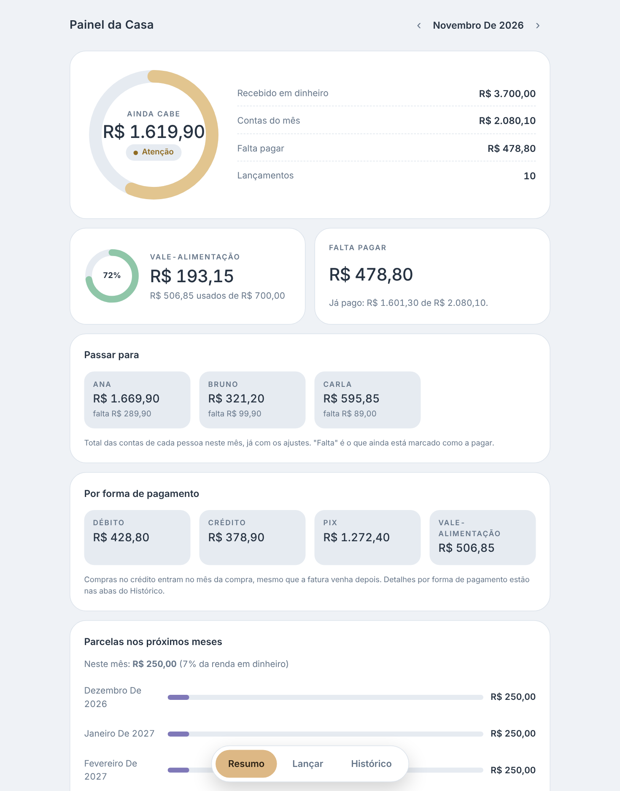
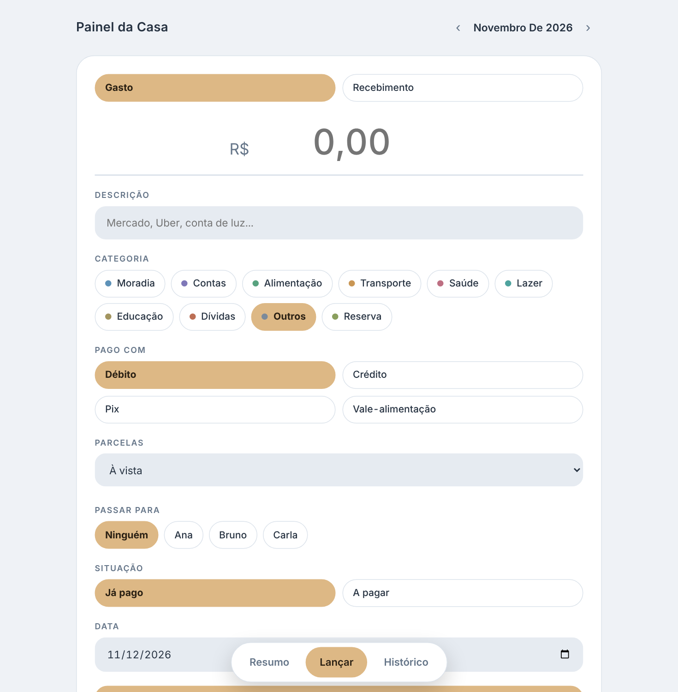
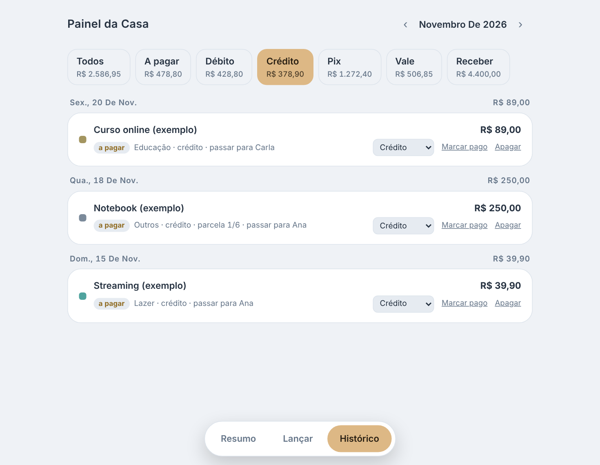

Painel da Casa
Controle financeiro a dois, direto no desktop. Lance gastos e recebimentos, acompanhe o mês em um painel e tenha uma planilha Excel sempre atualizada, sem internet e sem conta em lugar nenhum.

O que ele faz
Um painel simples para a rotina financeira de uma casa, com o que importa no dia a dia.
Lançar gastos
Valor, descrição, categoria, forma de pagamento, data, para quem passar e situação (já pago ou a pagar).
Formas de pagamento
Débito, crédito, Pix e vale-alimentação, com abas separadas. A forma pode ser trocada depois, sem apagar o lançamento.
Compras parceladas
Informe o total ou o valor da parcela: o app cria uma parcela por mês nos meses seguintes.
Recebimentos manuais
Lançados mês a mês, porque o valor varia. Em dinheiro ou em vale-alimentação.
Resumo do mês
Quanto ainda cabe, quanto falta pagar, totais por categoria e por pessoa, parcelas futuras e comparação mês a mês.
Conselhos financeiros
Dicas de boas práticas calculadas a partir dos lançamentos: peso das parcelas, reserva de emergência e limites por categoria.
Planilha automática
A cada alteração, o app regenera o CONTAS_.xlsx com lançamentos, resumo mensal e menus de listas.
Uso a dois
Os dados ficam numa pasta sincronizada (como o OneDrive); cada pessoa usa o app no seu computador.
Telas
Capturas feitas com os dados fictícios do projeto.


Arquitetura
A interface foi feita para rodar dentro do Claude. Uma camada de compatibilidade (shim.js) a liga ao armazenamento local, sem reescrever a tela.
app/index.htmlResumo · Lançar · Histórico
app/shim.jsbanco de documentos em memória
preload.jscontextBridge: load / apply
main.js · store.js · xlsx.jsdados.json (banco)CONTAS_.xlsx (gerada sozinha)Operações, não "salvar tudo"
Cada alteração vira uma operação (set, update, delete). O armazenamento relê o arquivo antes de aplicar, para não apagar o que a outra pessoa lançou.
Escrita atômica
O arquivo é gravado em um temporário e depois renomeado, para não corromper os dados se o computador desligar no meio.
Planilha sem biblioteca
O xlsx.js monta o Office Open XML e o ZIP à mão, com tabela do Excel, listas, formatação condicional e fórmulas SUMIFS já calculadas.
Sem sobrescrever à mão
O dados.json é a fonte da verdade; a planilha é sempre gerada a partir dele.
Tecnologias
| Camada | Tecnologia | Para quê |
|---|---|---|
| Desktop | Electron | Janela, menu e acesso à pasta de dados, com janela isolada (contextIsolation e sandbox). |
| Interface | HTML, CSS e JavaScript puro | Telas sem framework; gráficos em SVG. |
| Empacotamento | electron-builder | Executável portátil (.exe) que não precisa de instalação. |
| Armazenamento | Arquivo JSON local | Banco de dados simples, com escrita atômica. |
| Planilha | Gerador próprio de .xlsx | Office Open XML + ZIP escritos à mão. |
| Runtime | Node.js | Processo principal e ferramentas de build. |
Como usar
Requisito: Node.js (versão LTS) no Windows.
# instalar as dependências npm install # abrir o app em modo de teste npm start # gerar o executável portátil: dist/Painel-da-Casa.exe npm run build
Onde ficam os dados
...\OneDrive\Documentos\Contas a Pagar(ou Documentos, sem OneDrive)dados.json: o banco de dadosCONTAS_.xlsx: gerada sozinha; só para consultar- Menu Arquivo: escolher outra pasta
Limitações
- Edições feitas direto no Excel não voltam para o app
- Lançar ao mesmo tempo em dois computadores pode gerar conflito do OneDrive
- Sem assinatura digital: o Windows pode mostrar o aviso do SmartScreen
- Os conselhos são gerais, não são recomendação financeira personalizada
Privacidade
Não há servidor, conta, login nem telemetria. Os dados nunca saem do computador, a não ser pela pasta sincronizada que você escolher. O .gitignore impede o envio de dados.json e CONTAS_.xlsx ao repositório, e os dados de exemplo do projeto são todos fictícios.